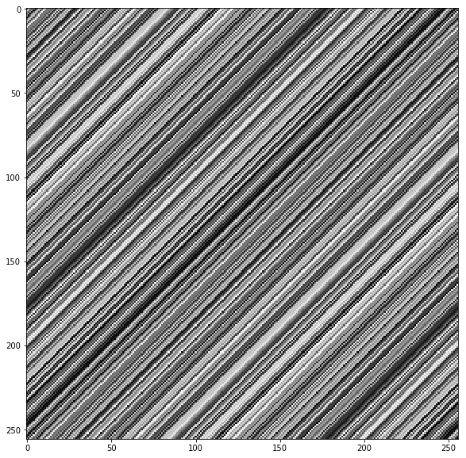
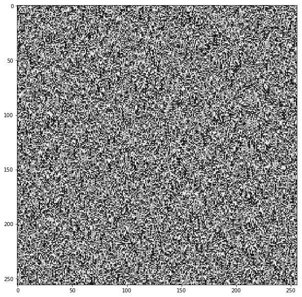
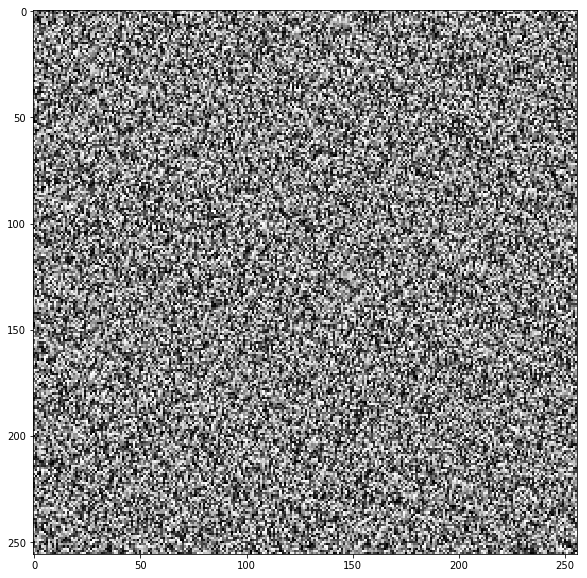
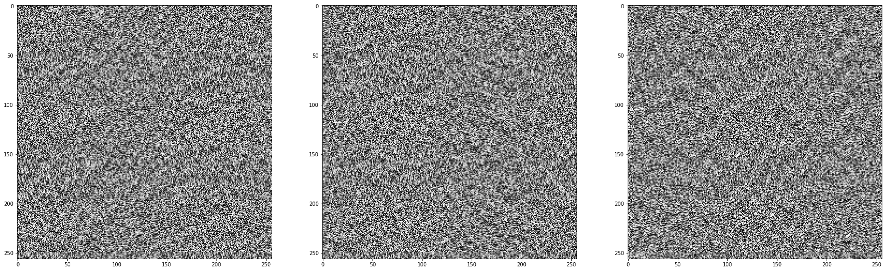
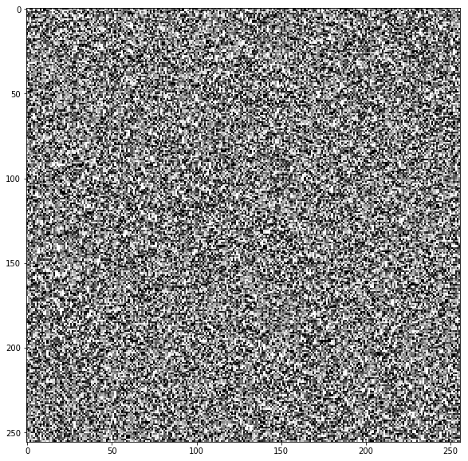

ランダムピック
整数の組 \((i, j)\) に対してランダムな整数を割り振りたい。 それも、全ての組について乱数を保存することなく割り振りたい。
# モジュールのインポート
%matplotlib inline
from math import floor
from itertools import product
import numpy as np
import matplotlib.pyplot as plt
import matplotlib
matplotlib.rcParams["figure.figsize"] = (10, 10)
失敗例
_random = np.random.permutation(256)
def not_random_pick(i, j):
return _random[(i + j) % 256]
こうすると \(random\_pick(i, j) = random\_pick(i - 1, j + 1)\) が成り立ってしまうので値がランダムにならない。
canvas = np.array([[not_random_pick(i, j) for i in range(256)] for j in range(256)])
plt.imshow(canvas / 256, cmap=plt.cm.binary)

プロットすると全くランダムでないのがよく分かる。
成功例
\(random\_pick(i, j) = random\_pick(i - 1, j + 1)\) が成り立つのがまずいので、以下のように _random から値を二回取り出すようにすれば良い。
_random[x] と _random[x+1] には関連がないので、 random_pick(i, j) の返り値もランダムになる。
_random = np.random.permutation(256)
def random_pick(i, j):
return _random[(_random[i] + j) % 256]
canvas = np.array([[random_pick(i, j) for i in range(256)] for j in range(256)])
plt.imshow(canvas / 256, cmap=plt.cm.binary)

工夫
mod演算無し
_random から値を取り出すときに (_random[i] + j) % 256 が配列の大きさを超えないようにモジュロ演算をしているが、
_random に入っている値 と j には制限があるので、 _random の長さを大きくすることでモジュロ演算を省くことができる。
_random = np.zeros(512, dtype=np.int) # 512 = (_random[x]の最大値) + (jの最大値)
for i, val in enumerate(np.random.permutation(256)):
_random[i] = val
_random[i + 256] = val
def random_pick(i, j):
return _random[_random[i] + j]
canvas = np.array([[random_pick(i, j) for i in range(256)] for j in range(256)])
plt.imshow(canvas / 256, cmap=plt.cm.binary)

高次元化
高次元でも「 _random から引いてきた値に引数を足してまた _random から引く」を繰り返せば同じことができる。
_random = np.random.permutation(256)
def random_pick_higher_order(args):
ans = 0
for x in args:
ans = _random[(ans + x) % 256]
return ans
# 3次元でやる
canvas = np.array([[[random_pick_higher_order([i, j, k]) for i in range(256)]
for j in range(256)] for k in range(256)])
fig, (ax0, ax1, ax2) = plt.subplots(ncols=3, figsize=(10, 30))
# 適当に切ってプロットする
ax0.imshow(canvas[:, :, 32] / 256, cmap=plt.cm.binary)
ax1.imshow(canvas[:, 63, :] / 256, cmap=plt.cm.binary)
ax2.imshow(canvas[157, :, :] / 256, cmap=plt.cm.binary)

返り値を整数以外にする
random_picker の返り値を使って別の配列から引くようにすれば任意のオブジェクトを返すようにできる。
_alphabets = "abcdefghijklmnopqrstuvwxyz"
_random = np.random.permutation(26)
def random_pick_alphabet(i, j):
return _alphabets[_random[(_random[i % 26] + j) % 26]]
canvas = [[random_pick_alphabet(i, j) for i in range(10)] for j in range(10)]
for xs in canvas:
for x in xs:
print(x, end=" ")
print("")
g j w s e f b p c t m b t l u y e v a n o e n w x q u c g h j u h t k s x a m r b x r n i l k g o d e k d h z w i m j p u i p r f t z o b v x z v d y n f j e c k f c p q h y b u a i y a v s r q e x g
まとめ
クラスにまとめる。
このクラスはコンストラクタの引数として配列を受け取り、 インスタンスに関数呼び出しをするとその配列の要素がランダムに返る。
class RandomPicker():
# とりあえず256としておいて、必要ならば後で更新する
# 256のままだと picker(10, 0) = picker(266, 256) となる
random_size = 256
random = np.random.permutation(random_size)
def __init__(self, base, arg_max=0):
# arg_maxには予想される引数の最大値を渡す
# 予想できない/ランダム性がそれほど必要ない 場合はデフォルトのままでいい
self.base = base
arg_max = max(len(base), arg_max)
if arg_max > RandomPicker.random_size:
RandomPicker.random_size = arg_max
RandomPicker.random = np.random.permutation(arg_max)
def __call__(self, *args):
ans = RandomPicker.random[args[0] % RandomPicker.random_size]
for i in range(1, len(args)):
ans = RandomPicker.random[(ans + args[i]) % RandomPicker.random_size]
return self.base[ans % len(self.base)]
次のように使う。
picker = RandomPicker(np.linspace(0.0, 1.0, 10))
canvas = np.array([[(picker(i - 1, j - 1))
for i in range(256)]
for j in range(256)])
plt.imshow(canvas, cmap=plt.cm.binary)

要素数\(10+256=266\) の配列を確保するだけで\(256\times256\)のホワイトノイズを作れて嬉しい。
各ピクセルに対する処理(関数を適用する、隣接ピクセルの平均を取る…)が増えればそれだけこの方法による利点は大きくなる。